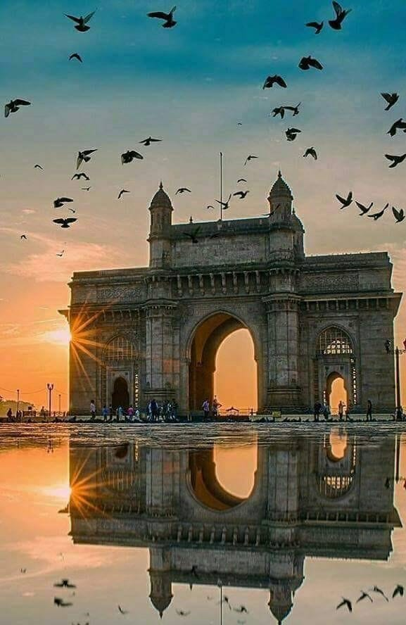
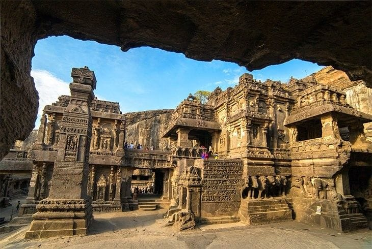
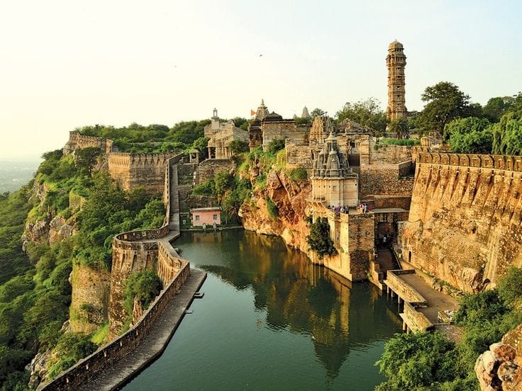

North India
North India
Taj Mahal
Agra, Uttar Pradesh
An ivory-white marble mausoleum commissioned in 1632 by Mughal emperor Shah Jahan. A crown jewel of architecture and eternal love.
Red Fort
Delhi
A historic red sandstone fort in Delhi that served as the main residence of the Mughal emperors for nearly 200 years.
Qutub Minar
Delhi
Standing tall at 73 meters, this five-story red sandstone minaret is a masterpiece of early Indo-Islamic architecture built in 1192.
India Gate
Delhi
A prominent 42-meter high war memorial dedicated to soldiers who laid down their lives in the First World War.
 North India
North India
Amber Fort
Jaipur, Rajasthan
Perched on a hilltop overlooking Maota Lake, famous for its artistic Hindu style elements, mirror work, and grand courtyards.
 South India
South India
Meenakshi Temple
Madurai, Tamil Nadu
An ancient Dravidian temple complex dedicated to Goddess Meenakshi, famous for its towering colorful gopurams sculptured with thousands of figures.
Mysore Palace
Mysore, Karnataka
The official residence of the Wadiyar dynasty. An Indo-Saracenic masterpiece illuminated spectacularly by nearly 100,000 bulbs on festivals.
 South India
South India
Hampi
Hampi, Karnataka
The capital ruins of the medieval Vijayanagara Empire, featuring thousands of ancient carved granite stone temples and monolithic chariots.
Brihadeeswara Temple
Tanjore, Tamil Nadu
Built by Raja Raja Chola I in 1010 AD, boasting the world's tallest granite shrine tower and remarkable Chola dynasty art.

West IndiaGateway of India
Mumbai, Maharashtra
An iconic 26-meter arch monument erected to commemorate the landing of King George V and Queen Mary at Apollo Bunder in 1911.

West IndiaAjanta Ellora Caves
Chhatrapati Sambhajinagar, Maharashtra
Ancient rock-cut cave monuments featuring masterpiece Buddhist murals and the monolithic rock-cut Kailasa temple carved out of a single mountain rock.

West IndiaChittorgarh Fort
Chittorgarh, Rajasthan
One of the largest fortresses in India, symbolizing Rajput valor, chivalry, and sacrifice spread across 700 acres atop a 180-meter hill.
Mehrangarh Fort
Jodhpur, Rajasthan
Rising 400 feet above the Blue City of Jodhpur, enclosed by thick walls holding ornate palaces and ancient royal court relics.
Victoria Memorial
Kolkata, West Bengal
A majestic white marble building in Kolkata built between 1906 and 1921, blending Indo-Saracenic revival architecture with British heritage gardens.
Konark Sun Temple
Konark, Odisha
Designed as a colossal 13th-century stone chariot for the Sun God Surya, complete with 24 carved wheels pulled by seven galloping horses.
Jagannath Temple
Puri, Odisha
A famous 12th-century sacred temple dedicated to Lord Jagannath, renowned worldwide for its annual grand Rath Yatra chariot procession.